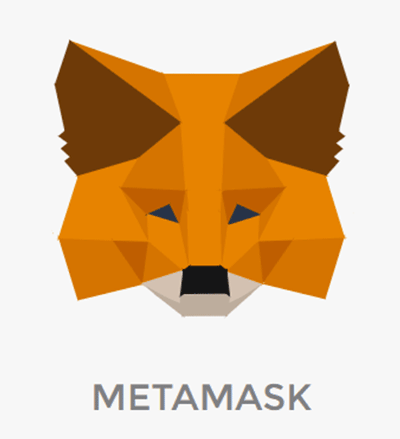
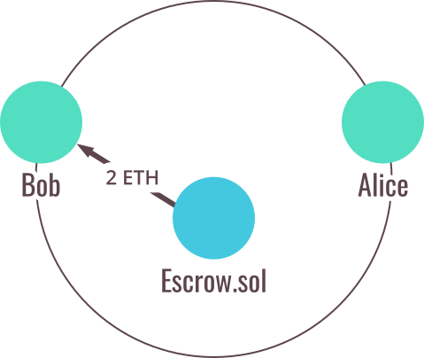

How it works
The Escrow256 dApp is a decentralised app built on Ethereum allowing you to escrow ERC20 tokens and ether.
It enables an ERC20 token owner to sell their tokens for ether trustlessly. This app requires Metamask to transfer ether and tokens to the escrow contract. MetaMask is a web-based wallet that runs in your browser (Chrome, Firefox,
Opera or Brave Browser). For more details on how to use Metamask please check out this video. Do not send ether directly from an exchange (such as coinbase, binance or other). Using Metamask you can transfer funds to the escrow smart contract. The Escrow256 smart contract will exchange the funds to the respective address upon completion of the transaction, therefore you should only send from an address which you control the private keys.

The steps to complete such a transaction are:
- The account owning the ERC20 token (seller) creates the escrow and receives a corresponding escrowId.
- The seller transfers the ownership of a preagreed amount of ERC20 tokens to the escrow smart contract. The contract stores the balance of the escrow with the respective Id that is generated at escrow creation.
- The seller lets the buyer know that the escrow had been created and passes along the id number, upon which the buyer of the ERC20 tokens deposits a preagreed amount of ether into the respective escrow contract.
- The buyer and seller can check the balances of the escrow with the respective Id and when they are satisfied with the locked up balances they can individually confirm by clicking the confirm button. If they do decide to not go through with the transaction, they can hit the cancel button instead.
- Once both buyer and seller have clicked 'confirm Transaction', the smart contract will update the state of the respective escrow. The buyer or seller can then click 'Complete Transaction', after which the token and ether will be exchanged.

Placeholder illustration (from en.bit.news)